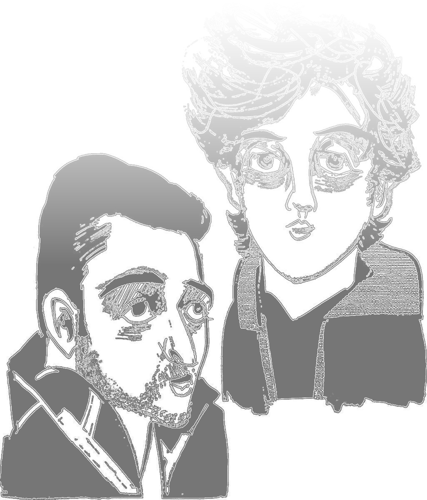

  <section class="pagecontainer" id="page3">
    <div class="container">
      <div id="headwrapper">
        <div id="head">Inspire Reactions: </div>
        <div id="head2">Government & Media Responses to our Magazine</div>
      </div><div class="column" id="firstcolumn">
        <div class="head"><span class="semibold italic">Abdurazāq Al-Jamal<br><span class="grey">(Yemeni Journalist)</span></span></div>
        <div class="content">Note first that the magazine did not stop publication after the assassination of Sheikh Anwar Al-Awlaki, Samir Khan and Abu Yazeed al-Qatari, and therefore the effective incitement did not stop. That means that al-Qāeda has substitute commanders ready. The Boston operation will inspire other operations and other perpetrators inspired by the ones who did the previous operations and the same motivations and so on etc. This is why AQ refers to the recent Woolwich operation in the UK.<span class="italic">The fact that the Internet links to the magazine and the magazine itself were pulled down <span class="bold">minutes</span> after it was released gives an idea of the extent to which the US is nervous. <span class="bold">No other Jihādi media product seems to produce such erratic behavior in the US.</span></span> The US has no protection from these types of operations unless it plants bugs in citizens’ heads to monitor their thoughts ... and success in these regard cannot go beyond capturing the perpetrators after they execute their operations.</div>

        
      </div><div class="column">
        <div class="head"><span class="semibold italic">STRATFOR<br><span class="grey">(Global Intelligence Company)</span></span></div>
        <div class="content">The issue also contains a brief article by Mohammed Al-Sanāni entitled “An Eye for an Eye” that mentions the May 22 murder of British soldier Lee Rigby in London, complete with an iconic image of one of the alleged killers, Michael Adebolajo, with bloodied hands, a knife and a cleaver. Another brief article mentions the tornado that devastated Moore, Oklahoma on May 20. Ibrāhim’s ability to work these recent events into this edition demonstrates <span class="italic">a nimbleness we have not seen in Inspire Magazine <span class="bold">since the death of former editor Samir Khan in 2011. This indicates Ibrāhim and his team are growing more comfortable with the publishing process.</span></span></div>
        <div class="rule"></div>
        <div class="head"><span class="semibold italic">Rep. Adam B. Schiff<br><span class="grey">Congressman (D-California)</span></span></div>
        <div class="content">I don’t think Al-Qāeda has a First Amendment right to put out its propaganda, to encourage people to commit acts of terrorism. Unfortunately, I think Inspire magazine is a significant threat to the extent that it disseminates information about how to build a bomb or encourages people to get <a href="http://www.skateboardingmagazine.com/wp-content/uploads/2012/02/radical.jpeg">radicalized</a>. <span class="italic"><span class="bold">It has shown a dangerous effectiveness.</span> And one that’s difficult to address.</span></div>
      </div><div class="column" id="thirdcolumn">
        <div class="head"><span class="semibold italic">Times of Israel<br><span class="grey">Nationally Syndicated Newspaper</span></span></div>
        <div class="content">Abraham H. Foxman, the ADL’s national director, said Inspire’s actual focus was incitement against Jews. “Anti-Semitism fuels the blood lust of Al-Qāeda’s Inspire magazine,” Foxman said. “Since the early days of Osāma bin Laden, Al-Qāeda has never made a secret of their animus toward Jews, and its current leadership continues to call on its supporters around the world to target Jews and Israelis for acts of terror. Inspire Magazine is anti-Semitic through-and-through and their use of incitement against Jews has served as a central tactic in the terrorist organization’s recruitment process.”
        The articles and letters in the 11th issue of the magazine encourage additional attacks on US soil and mentions the Tsarnaev brothers use of the magazine for their attack. According to US officials, <span class="italic"><span class="bold">the brothers got bomb-making tips from the publication.</span> Tamerlan Tsarnaev was an ardent reader of other Jihādist websites and extremist propaganda, US officials have said.</span> The issue features tweets from ‘the mujahideen in the Arabian Peninsula’ celebrating the bombings and includes a section lauding the Oklahoma tornadoes.</div>

        
      </div><div class="column">
        <div class="head"><span class="semibold italic">Middle East Media Research Institute<br><span class="grey">(Research Oriented Non-Profit)</span></span></div>
        <div class="content">Western intelligence agencies are <span class="bold italic">clearly concerned about the effectiveness of Inspire as a recruitment and radicalization tool.</span></div>

        <div class="rule"></div>

        <div class="head"><span class="semibold italic">CBS NEWS<br><span class="grey">(Nationally Syndicated News Network)</span></span></div>
        <div class="content">This (release of Inspire issue 11) was a bit of the buzz yesterday as this conference of the major city police chiefs and the top of FBI officials, but the bottom line is this issue of Inspire Magazine, if you will, a bit of victory lap. They picture numerous articles and pictures of the Boston Bombings. They feature articles and photos from the London’s beheading of the soldier, and <span class="italic">their basic point actually echoes what New York police commissioner told this group of police chiefs and FBI officials the other day here in Dallas, <span class="bold">which is the new model of terrorism,</span> independent operators who are reading into Al-Qāeda narrative online,</span> getting their instruction actually right out of Inspire Magazine and how to make the bomb. And they call it, ‘A perfect case for low cost investment’, citing the Boston example.</div>

        
      </div>
    </div>
  </section>
